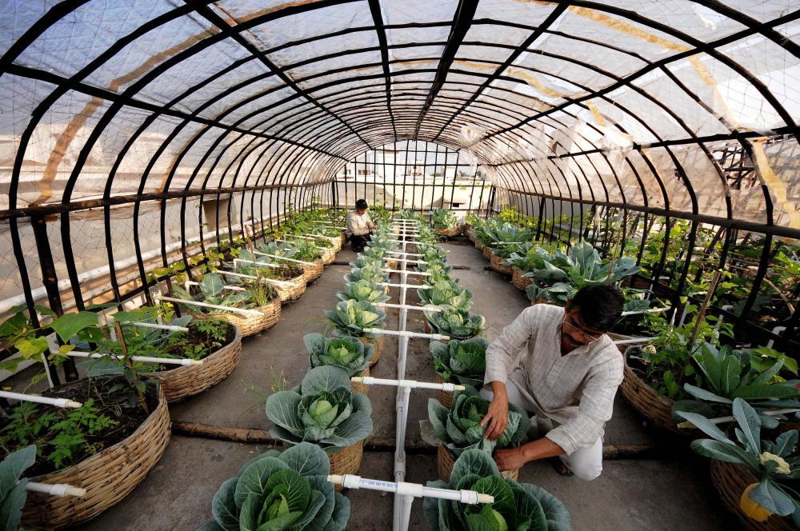
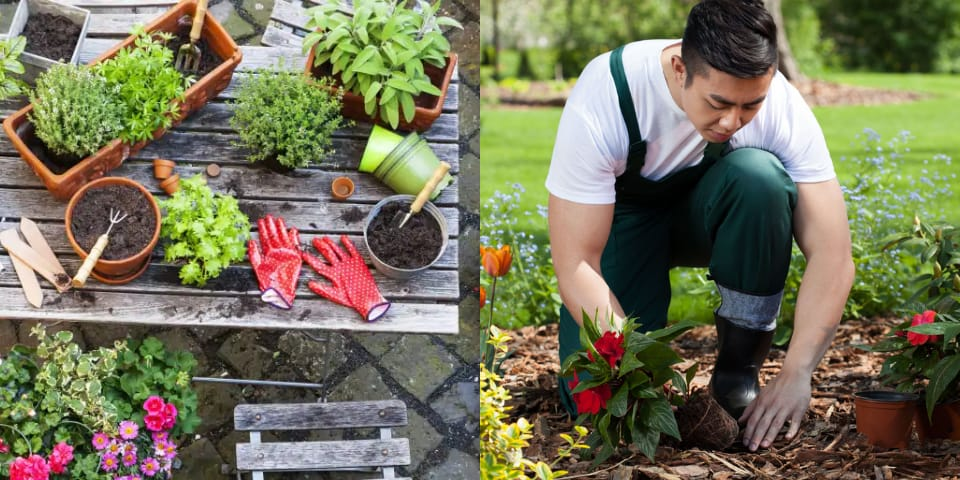
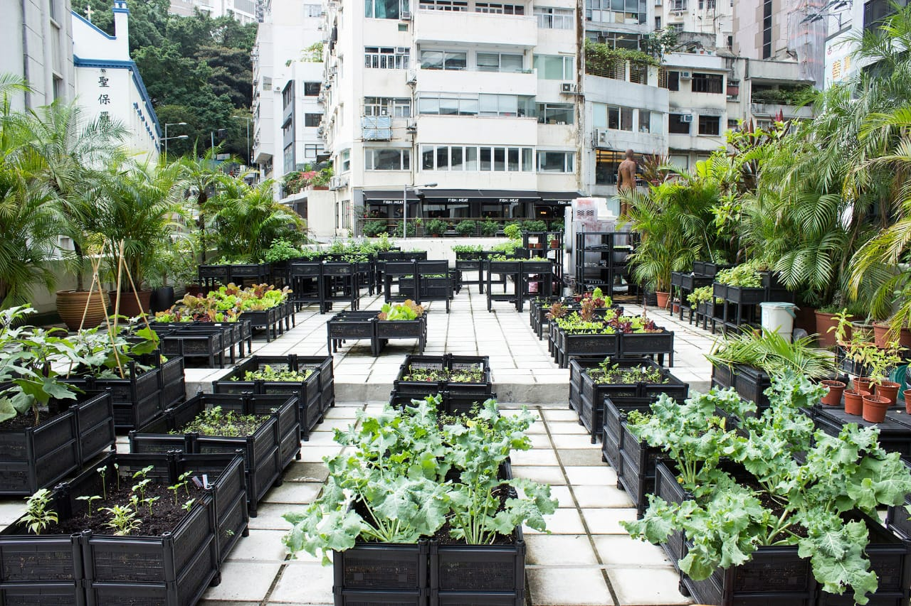

Welcome to Our Community
WHY IS TERRACE FARMING A GOOD IDEA
Terrace gardening is becoming increasingly popular in cities, thanks to both the paucity of space as well as the citizens’ need for greener environments. It is only natural, then, for open rooftops in cities (summer conditions permitting) to serve as healthy, alternative spaces to grow a garden. And what better way to use your terrace than to grow your own nutritious food produce.

HOW TO DO...!
• Smartly utilise your vertical space to double the space you have on your terrace.
• Make a plan on how you should do this.
• If you have walls, hang planters on it.
• Grow vegetable shrubs and vines such as beans, squashes, gourds and tall tomato varieties near the walls and railings.
PROCEDURE TO GROW PLANTS
Choose the Right Location:
Terrace that receives at least 6-8 hours of direct sunlight.
Select Containers:
Use containers or pots with good drainage to avoid waterlogging.
Prepare the Soil:
Use a well-draining potting mix rich in organic matter.
Planting Seeds or Seedlings:
You can either start from seeds indoors and transplant seedlings or directly use seedlings.
Spacing:
Leave enough space between plants for them to grow comfortably.
Watering:
Keep the soil consistently moist but not waterlogged, require regular watering.
Fertilizing:
Use a balanced, slow-release fertilizer or organic options like compost.
Harvest:
When harvesting, use your pruning shears or scissors to cut the fruit from the plant, leaving a small stem attached to the fruit. Do not pull or twist the fruit, as this can damage the plant.

INTERESTING FACTS
• Urban agriculture is also usually organic which means the produce is more nutritious compared to products grown in large-scale farms which use pesticides.
• It creates less food waste as food from urban farm reaches the consumer faster and therefore lasts longer after having been purchased.
